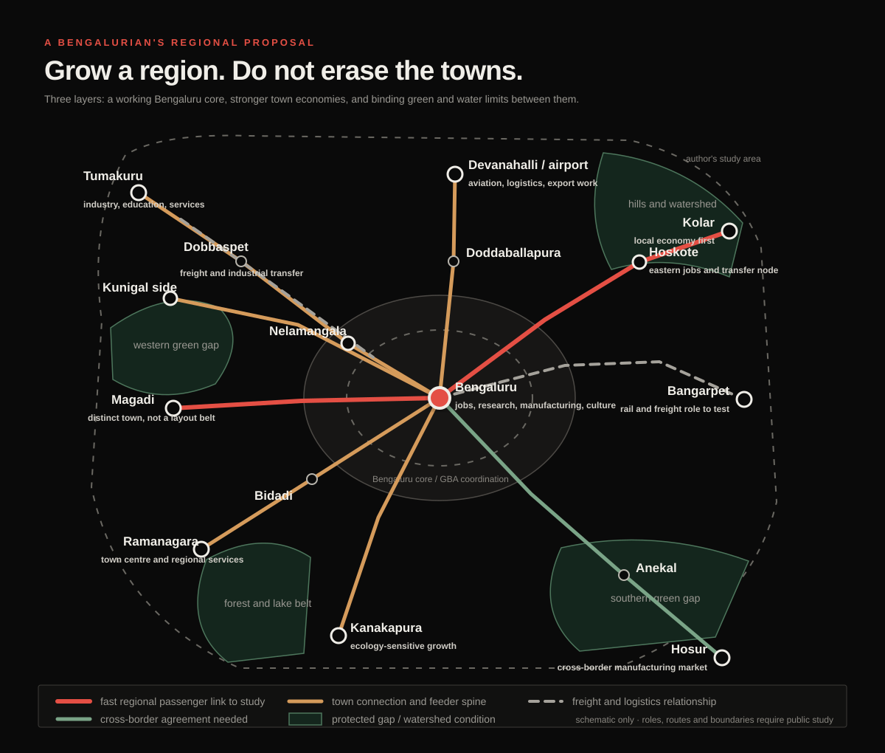
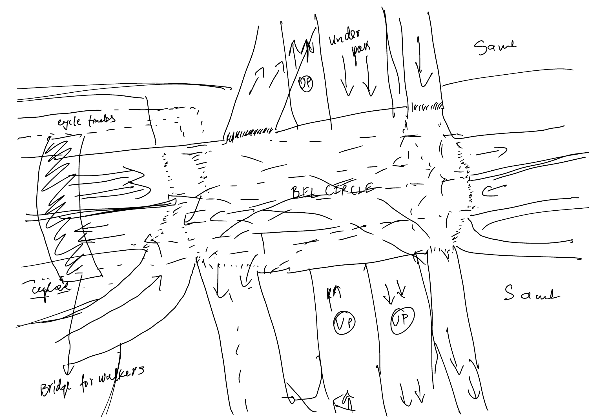
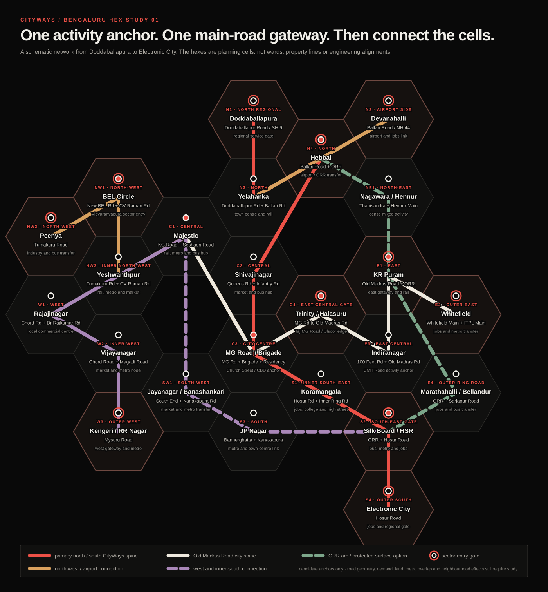
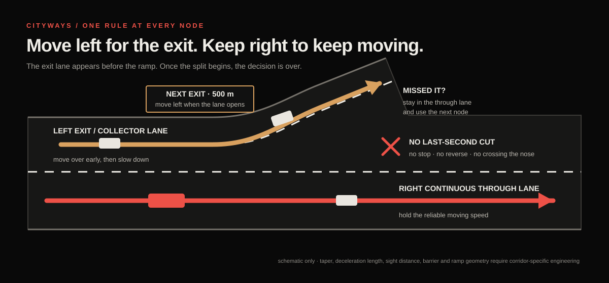
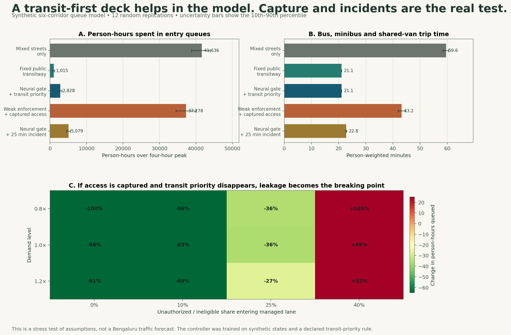

Okay, here is the actual proposal. Treat Bengaluru and the towns around it as one working region when transport, water, jobs, freight, and the landscape cross local boundaries. But do not treat every place inside that region as land waiting to become Bengaluru.
The plan has three layers. Bengaluru has to make far better use of the city it has already built. The towns around it should gain jobs, institutions, services, and connections of their own. And the green gaps, hills, lakes, drains, farms, and watersheds between them have to become binding limits before another layout is approved.
If we cannot establish and enforce those conditions, Bengaluru is better off staying within its existing boundaries. Let the other towns be towns. They still deserve investment, good jobs, and better public services. Becoming an extension of Bengaluru should not be the price of getting them.


The map is deliberately bigger than today’s formal Bengaluru Metropolitan Region. I am asking whether this wider belt can be treated as a serious planning geography. I am not asking for one endless city.
That distinction matters. A giant boundary does not create a functioning region. It can just create a giant mess with a nicer name.
The north-western side already gives us a logical industrial and skills relationship through Peenya, Nelamangala, Dobbaspet, and Tumakuru. Tumakuru should grow as a serious city for industry, education, and services. Dobbaspet can handle industrial and freight transfer where the evidence supports it. The space between them should not become one unbroken roadside real-estate strip.
To the north, Doddaballapura and Devanahalli can support manufacturing, logistics, aviation, and export work. But the airport cannot become an excuse for random speculation across every village around it. Water capacity, worker housing, public transport, drainage, and protected land have to be decided before the next wave of construction. Chikkaballapura and Chintamani belong on the study map too because the north-eastern side does not just end at the airport and reappear at Kolar. I am leaving them as context towns for now instead of assigning them some made-up economic role from my laptop.
The eastern side needs even more discipline. Hoskote could become a proper jobs and transfer node. Kolar should build its own economy and public services instead of becoming a distant dormitory for Bengaluru. Bangarpet could be tested as a rail and freight staging point, where large loads transfer before reaching the dense city, but it only deserves that role if rail capacity, freight demand, land, and neighbourhood effects support it.
The southern side is already a cross-border labour and manufacturing market through Anekal and Hosur. That needs a Karnataka and Tamil Nadu service agreement, not a fantasy that the state line has disappeared. To the west and south-west, Bidadi, Ramanagara, Kanakapura, Magadi, and the Kunigal side need stronger local centres while their hills, lakes, farms, and forest systems set hard limits on what can be built.
The lines on the map do not all mean the same technology. Some relationships may need regional or suburban rail. Some may work through express buses and feeder services. Some are freight relationships. The point is to decide the service and the role of each place before choosing the big project.
Four things should lock first: the land that cannot be built on, the water and utility capacity, the transport service, and the agreement that says which government has to deliver what. Only then should large new growth areas open. Otherwise land values run ahead of infrastructure, people buy promises, and the public spends the next twenty years trying to repair a decision it never properly made.
And honestly, this whole idea did not begin with a regional economic model. It became real for me at one junction.
The idea got real for me at BEL Circle
BEL Circle connects a ridiculous number of places I care about. My favourite spots are around there. A lot of my friends live across the roads connected to it. It is one of those parts of Bengaluru where my mental map is not a set of wards or planning zones; it is people, turns, shortcuts, memories, and the question of how long it will take to get from one side to the other.
So I drew it again:


The drawing still looks like a junction treatment. The larger thought behind it is a network.
I am imagining one or two controlled lanes in each direction, elevated only where the ground network cannot protect them, extending through the city and into future growth corridors. They would be publicly owned and reserved for scheduled buses, minibuses, licensed shared vans, emergency vehicles, and private vehicles carrying enough people to qualify. Entry and exit would happen only at planned nodes.
People’s homes and livelihoods matter more than a planner’s clean diagram. Bengaluru already sprawled, and we cannot erase that in some brutal clean-up. We have to work with the city people actually live in while refusing to repeat the same traffic structure as the next areas grow.
The structure can change with the place. Use an access-controlled elevated section only where it solves a real continuity problem and its columns, ramps, noise, and shadow can be handled. Use an underpass or tunnel where surface space and the ground conditions support it. Use a protected at-grade bus and HOV section where access can actually be controlled. There is no reason to pour one identical concrete ribbon across the whole city.
The clearer way to draw this is as a hex study. Divide the city into planning cells. In each cell, identify the place where daily activity, public transport, and a main road already meet. That becomes the candidate CityWays gateway. It is not automatically the richest or most famous neighbourhood, and a hex is not a ward or a new government boundary. It is just a way to force the same question across the city: where exactly would people enter, exit, transfer, and reach the street network?3
BEL Circle becomes the gateway for the Vidyaranyapura and New BEL Road side. Doddaballapura, Yelahanka, Hebbal, Peenya, KR Puram, Whitefield, Kengeri, Silk Board, and Electronic City become outer or regional gates. Majestic, Shivajinagar, MG Road, Trinity, Jayanagar, Koramangala, and other high-activity centres handle transfers inside the city.
And yes, the east-city road I was trying to name is Old Madras Road. The useful sequence is not one vague central zone. MG Road and Brigade Road form the broader city-centre anchor. Trinity is the decision point. Halasuru begins the transition east. Indiranagar becomes its own activity cell. Then the same spine continues towards Benniganahalli, KR Puram, and Whitefield. That is the kind of actual Bengaluru logic the network map has to show.


If this becomes another flyover system, it failed
Bengaluru already knows how to build a flyover that saves time in one direction and drops the same traffic into the next signal. That is not the idea.
The network has to be designed around people moved per lane, not cars moved per lane. A bus lane can look empty beside packed general traffic and still carry more people. That is why the access order matters: scheduled buses first; then minibuses and licensed shared vans; then qualifying HOVs only while capacity remains.45
Mixed flyover lane≈ 1,600 cars/hour × 1.2 people = 1,920 people/hour
Managed CityWays laneBuses + shared vans + four-person HOVs = 8,000–10,000+ people/hour
The testAbout 4.2 to 5.2 times the people, at a controlled and dependable operating speed.
Someone who cannot afford a car should still get the largest benefit through a fast bus, minibus, or shared van. This should reward sharing scarce road space, not the ability to buy the biggest toll. Buses should pay no facility charge. Shared services should pay little or receive operating support. Any private HOV price should be published, capped, and charged per vehicle so that four people can divide it.
And no VIP bullshit. There should be no discretionary pass for politicians, senior officials, party workers, or whoever knows somebody. Emergency access is a defined operating category. Every other category should be written into the same public rule, detected in the same way, and visible in an audit.
The exits are just as important as the lanes. There should be few of them. Each should feed directly into the beginning of a major road, a transit interchange, or a destination corridor with enough capacity to receive it. If ramps appear every few hundred metres, vehicles start weaving, the deck slows down, and each exit dumps a new queue into a neighbourhood. The system would recreate the mess one level higher.
The lane rule should feel familiar from a highway. Traffic keeps moving in the continuous lane on the right. Before an exit node, a collector and deceleration lane appears on the left. Drivers, buses, and shared vans move left while there is still proper distance, slow down inside that lane, and then take the ramp. Once the lanes split, the decision is over. If someone misses the exit, bad luck. They continue to the next node and drive back through the street network. Nobody stops, reverses, or cuts across the nose at the last second.6


One lane also means one breakdown can become everybody’s breakdown. Periodic refuge bays help, but they do not replace incident detection, tow crews, emergency access, crossovers, and a continuous shoulder where the structure can actually fit one. Managed lanes only stay reliable when enforcement, maintenance, and incident response are treated as the system rather than boring details added later.4
How fast should this actually be?
Fast enough to change a person’s day. Slow enough that a stopped vehicle, wet surface, tight curve, or bad merge does not turn one narrow lane into a disaster.
My proposed normal ceiling is 80 km/h on a fully separated open section, with the system built and operated to hold an actual 70 to 75 km/h trip when demand is high. On a constrained one-lane section or inside a tunnel, 60 km/h is more believable. Entry ramps and transfer nodes belong around 40 to 50 km/h. A protected street-level section could run at 50 to 60 only if pedestrians, local turns, parking, and random access are physically kept out of it.7
Those are targets for the concept, not speed limits I can legally declare from a laptop. The final number for each section has to follow its curves, sight distance, grades, lane width, barriers, drainage, pavement grip, bus performance, emergency access, and the road-specific notification required under Indian law.
The operating standard matters more than the number painted on a sign. I would borrow a hard benchmark from US managed-lane practice and adapt it here: the lane should deliver at least about 70 to 72 km/h through the main separated section during 90 percent of peak periods. If it keeps falling below roughly 65, stop admitting private HOVs before buses lose the advantage. Do not keep filling the lane because it looks empty from below.
Variable signs can step the limit down from 80 to 70, 60, or 40 for rain, a queue, maintenance, or an incident. Changes should happen in understandable steps, not as one sudden drop beside a stopped bus. If a breakdown blocks the only lane, close admission upstream and send the response team immediately.
The arithmetic is why 70 to 75 is enough. Twenty uninterrupted kilometres takes 16 minutes at 75 km/h, about 17 minutes at 70, 20 minutes at 60, and 48 minutes at 25. At 15 km/h it takes 80 minutes. Ramps and merges will add time, but the scale of the gain is real. Pushing the maximum from 80 to 100 saves only three minutes over the same 20 km while demanding more forgiving geometry and making every incident harder.
The flex is not touching 100 for two minutes. The flex is doing 70 every single morning while the road below is stuck at 20.
Where cameras and software actually help
At each gateway, cameras and short-range sensors should do a few narrow jobs: read the plate, verify the occupancy category, and detect an incident. Automatic number-plate recognition and occupancy inference should run at the edge against a versioned public decision table. A model can return a confidence score; the operating path still has to be deterministic: admit, reject, or divert for review. No model gets to improvise priority. Computer vision has already been tested for occupancy enforcement, including a deployed infrared and deep-learning system whose authors reported 97 percent accuracy across a very large sample.8
That does not make the output magically fair. Other field testing found that glare, tinted windows, darkness, and camera position can defeat video evidence. A low-confidence result or disputed charge has to reach human review. A false classification cannot automatically become a fine with no appeal. The public rule decides who gets priority; the model helps execute it.8
The privacy rule should be just as hard: zero raw-video hoarding by default. Process frames locally, keep them only through a short published dispute or incident window, and send the central system the minimum event record needed to verify the trip, bill it, and handle an appeal. A verifiable public audit log should show the rule and model version, admits, rejections, overrides, fees, error rates, and whether deletion deadlines were met without exposing plate numbers, faces, or individual journeys. Retention periods, access logs, deletion rules, and the appeal path belong in the operating law before the cameras switch on.8
Pricing can protect reliability, but it can also turn the whole thing into a “Lexus lane” if the only people with a dependable trip are the people who can keep paying more. Transport research is much less comfortable with blanket claims than either side of that argument. Equity depends on who receives the fast service, what alternatives exist, how revenue is used, and whether low-income travellers can reach the benefit without owning a car.9
My answer is to make price the secondary gate. Occupancy and public-transport priority come first. Dynamic pricing can manage the remaining HOV space within public caps. It cannot buy a solo driver past a full bus.
I ran the idea until it started breaking
I built a small Python stress test because a cool diagram can make almost anything look inevitable.
The model represents six Bengaluru corridor types during a four-hour peak. Vehicles arrive as solo cars, four-person HOVs, shared vans, minibuses, scheduled buses, and local freight. They queue either on mixed surface streets or on a one-lane controlled deck. I ran each main case twelve times, then changed demand, enforcement leakage, and incident capacity.10
The inputs are assumptions. They are not Bengaluru traffic counts. The corridor names describe the kind of movement being tested, not selected routes. The model is deliberately simple enough for someone else to open, change, and tell me where it is wrong.


Under the model’s stated assumptions, mixed streets produced about 41,600 person-hours of queueing across the six corridor types. A fixed transit-first rule reduced that to about 1,000. The neural gate reduced it to about 2,800. A 25-minute incident raised it to roughly 5,100, even though buses retained priority.
Then I let the system get politically captured. I admitted ineligible cars, removed hard transit priority, and made access cheap. Queueing climbed to about 37,300 person-hours, and the average bus, minibus, or shared-van trip rose from about 21 minutes under protected rules to 43 minutes. At the base demand level, when 40 percent of otherwise ineligible solo cars entered the deck, total queue delay became 49 percent worse than leaving everyone on the mixed streets.
The neural network did not win. The simple fixed rule beat it.
That is actually one of the most useful outcomes. The neural controller learned a declared priority rule from synthetic traffic states; it did not discover truth about Bengaluru. It became conservative and left more HOVs on the surface. If a simple, published rule works better and is easier for the public to audit, use the simple rule. AI belongs at the narrow operating edge: detection, short-term admission control, and incidents. It does not belong at the centre of public legitimacy.
The model still cannot tell us whether the structure is worth its construction cost, noise, shadows, ramp land, carbon, visual impact, or maintenance burden. It cannot decide whether rail or a surface busway would perform better in a particular corridor. Those questions need observed data and real alternatives. This simulation only says the operating logic is plausible enough to test, and fragile enough that governance is part of the engineering.
The sketch is closer to reality than I knew
Here is the slightly crazy part. BEL Circle is already planned as more than an ordinary metro stop.
The approved Bengaluru Metro Phase 3 runs from JP Nagar 4th Phase to Kempapura along the western Outer Ring Road. The Union government’s approval identifies BEL Circle as one of the project’s multimodal-integration locations. BMRCL’s project material goes further and lists BEL Circle for integration between the metro, railway, and suburban rail. It also proposes bus bays, pickup and drop-off areas, wider footpaths, and cycle-sharing facilities across Phase 3 stations.11
So the question is no longer whether BEL Circle can become an interchange. That direction is already inside an approved project. The question is what kind of interchange we will actually get.
Will changing from a bus to the metro be one short, shaded, obvious walk? Can someone from the Vidyaranyapura side reach the station without gambling with traffic? Do the cycle routes continue through the junction, or disappear exactly where they are needed most? Can autos and pickups wait without blocking buses? Does the public space feel usable at night? What happens during rain?
Those details decide whether “multimodal integration” becomes something people use or something that looked good in the project presentation.
BEL Circle is where the network has to prove itself
BEL Circle would not just be an entrance ramp. It would be a transfer node between the managed deck, the surface bus network, walking and cycling routes, and the coming metro and rail connections.
Before anyone chooses a structure, the site needs real measurements. Count people and vehicles by direction and time of day. Map the paths pedestrians already take, including the dangerous informal ones. Record bus stopping and dwell times, turning movements, crashes, drainage, utilities, trees, property access, delivery needs, and the available right-of-way. Then model the controlled deck against surface bus priority, junction redesign, and other alternatives using the same tests.
The future metro viaduct and station will already occupy space and change visibility. If another elevated structure saves time above but makes the interchange loud, dark, hard to cross, and awful to wait under, we have solved the wrong problem.
The ground level is the whole point
The ground level has to work for the slowest person using it. That means someone walking, pushing a wheelchair, carrying groceries, cycling, changing buses, or trying to cross with a child. It also means the person selling tea, the driver waiting between trips, and the worker travelling before sunrise.
India’s own urban-road guidance says street design should prioritise pedestrians, cyclists, and public-transport users, and that the design of an intersection must account for actual turning movements, transit, crash experience, and the mix of traffic. The guidance is already there. The hard part is making it survive the pressure to move cars faster through every drawing.12
The walking route should be continuous, not a collection of nice footpath fragments separated by death traps. Cycle space should not throw riders back into mixed traffic at the circle. Crossings should follow where people need to go. Shade, lighting, seating, drainage, and visibility are transport infrastructure because they decide whether the trip is usable.
Green space matters too, but I do not mean leftover grass inside a traffic island that nobody can reach. A planted public area only counts if people can enter it safely, sit without breathing exhaust, and use it without feeling trapped under concrete. Trees need soil and water, not just circles cut into paving tiles.
This is where the design could become genuinely Bengaluru. Not by adding a decorative motif to a flyover, but by making the interchange feel like part of the neighbourhood around it. The deck only earns its place if the ground becomes better.
From one circle to a whole region
BEL Circle is the small version of the regional problem.
At the junction, through movement, local access, transit, public space, drainage, and nearby land uses all meet. Across the larger Bengaluru region, the same things meet at a different scale: regional rail, highways, town centres, freight, water, housing, jobs, forests, hills, lakes, and political boundaries.
The mistake would be drawing a huge ring around Bengaluru and assuming development inside it is inevitable. My proposal is almost the opposite. The bigger geography should allow us to decide where growth makes sense, where it does not, and which towns should become stronger without being absorbed.
Tumakuru does not need to become a Bengaluru bedroom community to be successful. Kolar should not have to trade away its own identity for speculative layouts. Hosur is already an industrial city in another state, not blank land on Bengaluru’s southern edge. Bangarpet might have a useful logistics role, but that needs freight demand, railway capacity, land, road access, and environmental testing. A pin on my map does not prove it.
The connections should let people reach more opportunity without forcing every person to travel into central Bengaluru every morning. That means jobs, colleges, healthcare, and daily services in the towns themselves, with fast regional links for the trips that genuinely need them.
The high-occupancy deck belongs inside that hierarchy. It can carry shared movement through the built city and reserve continuity into future corridors, but it cannot become the excuse for stretching Bengaluru forever. New growth areas should set the alignment, sparse access nodes, utilities, drainage, and protected land before plots are sold. Existing towns should connect at deliberate transfer points instead of letting ramps and layouts smear across every gap.
Otherwise we have not decentralised anything. We have just made the commute longer.
The landscape is a base condition
Before drawing development zones, establish what we are protecting. The hills people go to, green spaces, lakes, drainage paths, forests, farms that still matter, and the land that lets towns remain distinct need a place in the plan from the beginning. Some places should stay out of development altogether.
And improving a hill spot does not have to mean pouring concrete over it. It can mean looking after the vegetation, maintaining trails, removing rubbish, and making access safer without ruining the reason people went there.
Then establish where building is acceptable, what can be built, and what services must be available. Water, sewage, drainage, transport, schools, and healthcare need funding, capacity, and someone responsible for delivery. A future promise in a property brochure is not enough.
The rules have to mean something. They can be revised through evidence and public scrutiny. They should not quietly disappear because a well-connected developer wants an exception or a new government wants a different announcement.
If we cannot protect those conditions, Bengaluru is better off within today’s urban footprint. Let the other towns stay towns and invest in them properly.
Governance has to survive elections
This is the part that can make every beautiful map useless.
Bengaluru’s fragmentation is not a new discovery. The statement of objects for the Bengaluru Metropolitan Region Development Authority Act said in 1985 that agencies responsible for development, water, transport, electricity, and the city itself needed coordination. Forty years later, the agency names and boundaries have changed, but the coordination problem is painfully familiar.13
The new Greater Bengaluru Authority may help coordinate the city corporations and major public bodies. I appreciate that the city is finally trying to create a clearer metropolitan structure. But a larger authority does not automatically create clear accountability, and my proposed region extends beyond the GBA anyway.14
Karnataka also has a useful piece of its own political history to remember. Under Ramakrishna Hegde, with Abdul Nazeer Sab driving the Panchayat Raj reforms, the state tried to move rural local bodies from being delivery arms of higher government towards units of governance with elected power. The system was never perfect and later changes weakened parts of it. The important principle remains: coordination above should not mean stripping every meaningful decision from below.15
For this proposal, I would split responsibility clearly.
The regional level should set the protected landscape, transport corridors, water limits, major utilities, freight strategy, and rules that cross municipal boundaries. Town and city governments should control local streets, public spaces, neighbourhood services, and development within that binding framework. Project agencies should build and operate the systems assigned to them. Every promise needs a budget, a deadline, and a named institution answerable for it.
If the state government changes, the agreement should remain public and legally durable. If different parties control different governments, the service standard should not depend on whether their leaders get along that week.
The transitway would need the same protection: one public operating charter, published eligibility and price caps, automatic disclosure of exemptions, an independent appeals process, and performance data anyone can inspect. A later government can change the law through a visible process. It should not be able to quietly turn the bus lane into a convoy lane for powerful people.
That is what uninterrupted development actually means. Not removing politics, but building institutions that can keep doing ordinary work through political change.
Cross-border cooperation can be practical
Hosur makes the map more complicated and more useful. People and firms already cross the Karnataka and Tamil Nadu border. The planning system should acknowledge that reality without pretending the border has disappeared.
There is already an official feasibility process for a mass-transit extension between Bommasandra and Hosur. That does not guarantee construction, and it does not settle which government pays for what. It shows that cross-state transport cooperation is a real administrative problem, not a fantasy.16
A useful agreement would be narrow and measurable: service levels, fare integration, cost sharing, station access, land responsibilities, emergency coordination, and a dispute process. Each state keeps its authority. They cooperate where one labour and industrial market already crosses the line.
The same practicality should apply to freight. Large trucks and containers do not all need to enter the densest parts of Bengaluru. Peripheral logistics hubs can consolidate suitable loads into smaller urban deliveries, but only where the rail and highway links, land, operating demand, and neighbourhood impacts work. Bengaluru already has a multimodal logistics park under development near Dobbspet, so any Bangarpet proposal has to prove what additional problem it solves instead of duplicating capacity for the sake of a dramatic map.17
Could this compete with New York by 2045?
I got hung up on this question for a while. If we are talking about a region this large, could it compete with New York? Could Karnataka become a multi-trillion-dollar economy? Why do giant futures for Chinese city regions sound plausible while ambitious futures for Indian cities immediately get treated like delusion?
I still think the instinct behind the question is valid. Bengaluru has the people, engineering base, research institutions, manufacturing capability, global business links, and cultural energy to become one of the world’s most important urban economies. I have lived in New York and a couple of other major US cities, and Bengaluru has something I have not felt in those places in the same way.
But “bigger than New York” is a bad design brief. New York’s regional economy, institutions, infrastructure, and history cannot be copied by drawing an even larger boundary around Bengaluru. Land area is not competitiveness. Population is not productivity. A metro map is not a labour market unless the services actually work.
The honest comparison is useful precisely because Bengaluru is not starting from zero. WIPO ranked Bengaluru as the world’s 21st-largest innovation cluster in 2025, but only 83rd on its population-normalised intensity measure. New York ranked seventh on the overall cluster measure. The method is narrow. It uses patent filings, scientific publications, and venture-capital deals. But the gap still tells us something. Bengaluru already operates at global scale; it has much more work to do on the capability and output generated per person.18
By 2045, the Bengaluru region could be richer, more innovative, and more globally important than it is now by an enormous margin. Whether it overtakes one particular city in nominal dollars will depend on inflation, exchange rates, national growth, migration, and what boundary someone uses. That headline can move even when ordinary life does not improve.
The project’s economic value comes from practical things: more people reaching more jobs, firms reaching workers and suppliers, shorter and more reliable trips, land being used productively without destroying environmental capacity, and towns creating opportunity of their own. Those gains can compound for twenty years. They still have to be measured rather than assumed.
The ambition should stay huge. The claims should stay honest.
The highways should open Karnataka, not just move through it
One thing New York State got into my head is that a road can do more than get you somewhere. It can make an entire landscape understandable.
New York is obviously not perfect, and I am not trying to turn Karnataka into upstate New York. But its outdoor system is legible in a way I keep thinking about. A coloured disk can tell you which trail you are on. A proper trailhead can give you a map, parking rules, current conditions, and an emergency number. Campgrounds and lean-tos create an affordable way to stay near the landscape. Scenic byways connect mountains, farms, historic places, small towns, food, and local businesses as one trip instead of a pile of unrelated pins. The 750-mile Empire State Trail goes further and deliberately runs through city centres, village main streets, rural communities, and major landscapes.19
The economic value is not the wooden sign or the campsite fee. It is that the public system gives someone enough confidence to actually make the trip. Once they do, they buy food, rent equipment, stay in a town, hire a guide, visit another site, and come back in another season. A place that used to be a two-minute view from the highway can become a reason to spend a whole day in the district.
And yes, I mean the highway signs too. I mean the sign you see while you are still moving: camping at the next exit, scenic byway ahead, state park to the right, or three historic sites from the same junction. New York's highway sign programme has actual categories for camping and attractions on limited-access roads, and for natural, historic, cultural, scientific, educational, and religious places on other primary routes. That tiny moment matters. It is what makes you take the exit instead of driving past a place you did not even know was there.2021


Karnataka is reaching the scale where this should be designed into the road programme itself. The 2026-27 budget says 1,512 km under the first stage of State Highway Development Project Phase V was already being implemented, proposes another 1,846 km under Stage II, and separately plans work on 2,200 km of state highways and 3,500 km of major district roads during the year. It also proposes moving the 875 km KSHIP IV package towards approval and tendering. The government does not call all of this one “inner-state superhighway” network, so I will not pretend that it does. But the scale of construction is large enough to create one connected public-access system if the state chooses to treat it that way.22
Every corridor should be studied for more than speed. What hills, forests, lakes, temples, forts, farms, crafts, food streets, industrial histories, and smaller towns does it make reachable? Where can a bus stop safely? Where can a family use a clean toilet, refill water, or read a map? Which trailhead needs a marked lay-by, and which fragile place should have no large car park at all? Can a local cooperative run a campsite, guide service, food stall, cycle rental, or repair shop under a public standard instead of watching the entire visitor economy go to one outside contractor?
The signs have to begin on the highway, before the decision point. I should see the place and the exit early enough to make a calm decision. After the turn, another sign should confirm I am still going the right way. I should be able to reach the entrance without opening Google Maps in moving traffic. Use the same symbols and colours for bus access, walking routes, toilets, viewpoints, historic districts, and seasonal closures. The state has to own and maintain those rules, or the whole thing becomes another forest of paid boards fighting for attention.
I should also be able to open one Karnataka page to book a public campsite, check the trail, find the bus, report damage, and understand how difficult or accessible the place is. On the ground, that means trail markers, distance signs, toilets, waste handling, rescue plans, trained rangers, rain and fire closures, and maintenance money that does not disappear after inauguration day. Districts can keep their own materials, languages, food, and character. What has to stay common is the promise that the information works.
And the protected land remains the base condition. This cannot become an excuse to blast a wider road through every hill, pour concrete beside every waterfall, or convert public forest into a resort strip. Some places need timed entry, shuttle access, small-group permits, or a complete seasonal closure. A road can bring economic value towards a landscape without taking the road all the way into its most sensitive part.
If Karnataka gets that right, a new road does more than connect Bengaluru to the rest of the state. Towns across Karnataka can earn from movement Bengaluru already generates. A person arriving for work or a conference can add two days in Chikkamagaluru, Kodagu, Hampi, Badami, the coast, or a smaller place they had never heard of. A Bengaluru family can take a bus to a trail without needing an SUV and ten hours of Instagram research. Making the state easier to experience is economic infrastructure too.
Bengaluru also needs to remember why it exists
The same idea belongs inside the city, heavily.
Bengaluru should put its history into the actual city: durable markers, short walking routes, station displays, audio stories, small exhibits under flyovers and in transfer halls, and signs that connect a building or neighbourhood to the event that made it matter. Make the system consistent enough to recognise from across the street, but detailed enough that somebody who grew up nearby can still learn something.
The story cannot begin with “India’s Silicon Valley” and one photograph of a glass office. It should explain Kempe Gowda’s pete and tank-building legacy; Hyder Ali and Tipu Sultan’s Lalbagh; the Mysore State, Maharani Kempananjammani, Jamsetji Tata, and the creation of IISc in 1909; Hindustan Aircraft in 1940; BEL in 1954; ISRO in 1969 and the space institutions that grew here; KEONICS and Electronic City from 1976; and the Bengaluru software park that began in 1990 before satellite data links helped the export industry scale.23
It also cannot become another wall of famous men. The city was built and kept alive by gardeners, lake workers, factory workers, public-sector engineers, teachers, scientists, bus crews, street vendors, construction labour, domestic workers, artists, small manufacturers, students, and generations of migrants. Their work belongs in the story even when there is no statue and no single heroic date.
New York City does this in all kinds of ways. A small plaque on Wall Street explains that the street follows the old wall of New Amsterdam. The Triangle Fire Memorial runs the names and ages of garment workers across the building where 146 people died. During Covid, the MTA put the faces, names, and actual job titles of lost transit workers inside the subway. These are not one programme or one kind of monument. What stays with me is that the history sits where ordinary life happens.24


Imagine reaching BEL Circle and seeing a short, beautiful account of why the IISc, BEL, Jalahalli, and public-sector belt formed there. Imagine the Old Airport Road and HAL stops explaining why aircraft manufacturing came to Bengaluru in 1940. Imagine Electronic City showing the KEONICS, STPI, telecom, entrepreneur, and worker story instead of acting like the district materialised when the latest company leased an office.
This should not feel like homework pasted onto a pole. The marker, paving, map, planting, lighting, shelter, bench, and type should feel like one piece of Bengaluru. History can help a person navigate while also making the city feel less anonymous. Tourism then stops being a special zone where outsiders take photos. It becomes the way residents understand the place they move through every day.
What needs to be set before construction
First, publish the protected landscape and water constraints. If a lake, drainage route, forest, hill system, or essential agricultural area cannot support development, mark it before land prices start moving on rumours.
Second, define the role of each town. What jobs and institutions can it support? What housing is needed? Which trips should remain local, and which need a regional connection? “Future growth centre” is not a role.
Third, specify the transport service before choosing the monument. Frequency, travel time, fare, transfers, operating hours, capacity, and the full trip to the station matter more than the top speed in the announcement.
Fourth, reserve corridors and utility space early, with fair legal processes and deadlines. Indefinitely freezing someone’s land for a project with no funding is not planning.
Fifth, make every major station a walking, cycling, and bus project from day one. BEL Circle is the test. If the flagship interchange cannot make a safe crossing obvious, the regional map is bullshit.
Sixth, assign responsibilities in public. The regional body, city corporation, town council, transport operator, water agency, and state government should not all be able to point at one another when something fails.
Seventh, phase the work. Start with buses, junctions, footpaths, drainage, and existing rail improvements that can help now. Then pilot one controlled corridor before promising a citywide deck. Publish the pass-or-fail tests in advance: person-throughput, bus travel time and reliability, surface queues, incident-clearance time, safety, false enforcement, and the cost faced by low-income passengers. A twenty-year vision needs early proof that its institutions can deliver ordinary things.
Finally, publish outcomes. Travel time from door to door. Access to jobs within a reasonable time and fare. Housing costs. Water reliability. Flooding. Tree cover. Road deaths. Project cost and delay. The number of people displaced and whether rehabilitation worked. If a project fails those tests, a ribbon-cutting photo cannot rescue it.
Why I care this much
I’m Bengalurian as fuck, and I miss home. It has been a year and a half, and I honestly cannot wait to come back.
Maybe that is why I see the city so intensely right now. From here, I have been watching things change, following the new GBA, looking at maps, and trying to understand what Bengaluru could become. Some of the work I have seen feels like a good start. A lot of it is the bare minimum the city should have had already, but I still appreciate seeing it happen.
I am also not an urban planner. I am an ECE master’s student at Clarkson who drew a transit idea around a place he misses. That does not make the proposal right. It does mean the questions come from living there, leaving, seeing other cities, and thinking about what I want to return to.
Maybe I am missing things I would understand after living in cities in China, Japan, or Singapore. I am sure there are parts of Bengaluru I do not experience the way other people do. This essay is not a claim that my favourite side of the city represents everyone.
It is a claim that affection can be useful if it makes the standard harder.
I want to come back to a city that works better and still feels like the place I miss. I want the hills and green spaces to be better cared for, not treated as empty land waiting for a layout. I want the towns around Bengaluru to gain opportunity without being flattened into one continuous sprawl. And I want places like BEL Circle to become easier to cross, easier to understand, and better to spend time around.
The first version of that thought is still the messy sketch: the roads to my favourite places, the directions my friends live in, cycle tracks, an underpass, and a few lines trying to get through traffic out of everyone else’s way.
Now it needs measurements, engineering, governance, and a lot of argument.
But I think the instinct is right. Before Bengaluru gets any bigger, make the region work for the people and places already holding it together.
I also think India has an aesthetics problem. Not because India lacks beauty. We have a problem because design is too often treated as decoration after the engineering, procurement, signage, maintenance, and political decisions are already locked.
I might have a good idea for one possible way through that too.
Until the next one.
DISCUSSION YOUR TURN
Comments & reactions
Know the city or see a weak point in the proposal? Tell me what it misses.
Read the conversation or leave a comment on GitHub.
GitHub sign-in is needed to comment or react. Reading stays open to everyone. Reactions are added to the opening post on GitHub.